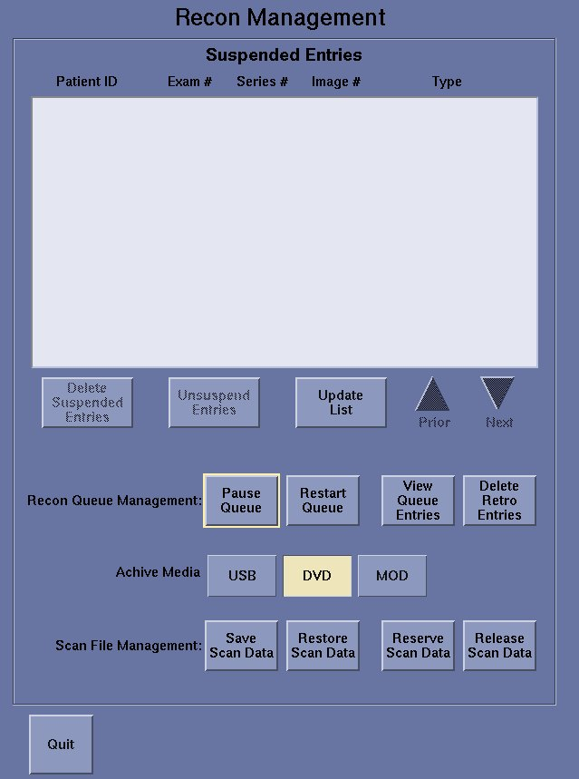
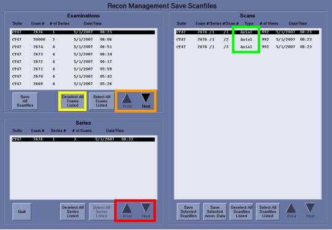
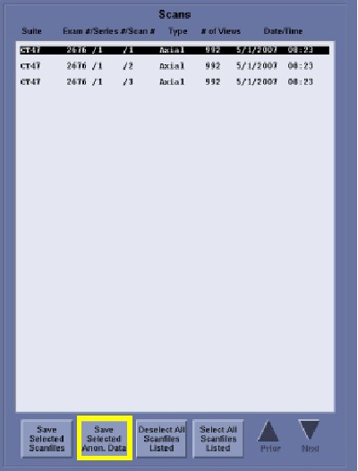

Operating Documentation
Direction 5307452-8EN, Rev# 4
Discovery CT750 HD Service Methods - Adv
Operating Documentation |
| Required Persons | Preliminary Reqs | Procedure | Finalization |
|---|---|---|---|
| 1 | Timing Not Applicable | Timing Not Applicable | Timing Not Applicable |
This document defines the procedures to save Quick Snap data and/or IQ Snap data to DVD-RAM disk(s), instructions for labeling the DVD-RAM disk(s) and instructions for shipping the DVD-RAM disk(s) to GE Healthcare for analysis.
The Quick Snap function provides the ability to collect data for troubleshooting System Level issues. The execution of the Quick Snap function can be found in Chapter 3 of the Learning and Reference Guide.
The IQ Snap function provides the ability to collect data and reserve scanfiles for troubleshooting Image Quality issues. The execution of the IQ Snap function can be found in Chapter 3 of the Learning and Reference Guide.
| Last Revised: | 23 July 2008 |
| Item | Qty | Effectivity | Part# | Manufacturer |
|---|---|---|---|---|
| DVD-RAM 9.4GB Double-Sided Rewriteable Disk(s) | Varies | - | 2337414 | - |
This procedure assumes that a Quick Snap was executed, per the procedures in Chapter 3 of the Learning and Reference Guide, and that the resulting files are ready to be saved to DVD-RAM disk and sent back to GE Healthcare for analysis. The Quick Snap function packages necessary data / log files into one directory for easy of archiving. The data / log files directory is saved to DVD-RAM disk by completing the following steps:
Open the Media Tower DVD-RAM Drive.
Insert a DVD-RAM 9.4GB Double-Sided Rewriteable disk into the Media Tower DVD-RAM Drive with a clean side facing up.
Close the Media Tower DVD-RAM Drive.
Click the [ImageWorks] button located in the Desktop / Status area (upper left corner of the Display / Image monitor).
Click the [Unix Shell - Left] button located on the ImageWorks Desktop Toolbar (upper right corner of Display / Image monitor). A Terminal window appears on the Scan monitor.
At the Terminal window prompt, type mkfsDVD and press [Enter] . .A Caution message and a Do you wish to proceed? [n] prompt are displayed in the Terminal window.
At the Terminal window Do you wish to proceed? [n] prompt, type y and press [Enter] . A new filesystem is completely created on the DVD-RAM disk when the next terminal window prompt is displayed.
At the Terminal window prompt, type mountDVD and press [Enter] . The DVD-RAM disk is completely mounted when the next terminal window prompt is displayed.
At the Terminal window prompt, type cd /usr/g/service/log and press [Enter] .This changes the directory to /usr/g/service/log.
At the Terminal window prompt, type cat sprsnap.log and press [Enter] . A list of information is displayed for each snap taken indicating type of snap, date and time of snap, full path to the snap contents, and whether the snap completed successfully.
From the displayed sprsnap.log information, locate the INST-directory name to be saved to the DVD-RAM disk.
| NOTE: | The INST-directory name has a structure of hostid.DateStampTimeStamp.inst. (Example: bay47.070412084337.inst, where DateStamp format is YYMMDD and TimeStamp format is HHMMSS.) |
At the Terminal window prompt, type:
cp –R hostid.DateStampTimeStamp.inst /DVD/hostid.DateStampTimeStamp.inst
Press [Enter] . The INST-directory is completely saved to the DVD-RAM disk when the next terminal window prompt is displayed.
Verify that the entire INST-directory was saved on the DVD-RAM disk by completing the following steps:
At the Terminal window prompt, type:
du –ch hostid.DateStampTimeStamp.inst
Press [Enter] . A list of subdirectory sizes of the INST-directory and the Total size of the INST-directory in bytes is displayed.
Note the Total size value of the INST-directory.
At the Terminal window prompt, type:
du –ch /DVD/hostid.DateStampTimeStamp.inst
Press [Enter] . A list of subdirectory sizes of the INST-directory and the Total size of the INST-directory on the DVD-RAM disk in bytes is displayed.
The Total size value of the INST-directory on the DVD-RAM disk should be the same as the Total size value of the INST-directory on the scanner. If they are not the same, repeat Steps 6 – 14.
At the Terminal window prompt, type unmountDVD and press [Enter] . The DVD-RAM disk is completely unmounted when the next terminal window prompt is displayed.
At the Terminal window prompt, type exit and press [Enter] . The Terminal window closes.
Open the Media Tower DVD-RAM Drive.
Remove the DVD-RAM disk from the Media Tower DVD-RAM Drive.
Close the Media Tower DVD-RAM Drive.
Label the DVD-RAM disk side with the following information:
“Quick Snap Data / Log Files” at top of Label
CSO / PQR Number
Site Name
System ID Number
Host ID Number
Current Date
Date and Time of Quick Snap Creation
Your Name and Phone Number
Forward the DVD-RAM disk to GE Healthcare per instructions in Section 5, “Finalization.”
This procedure assumes that an IQ Snap was executed, per the procedures in Chapter 3 of the Learning and Reference Guide, and the resulting files are ready to be saved to DVD-RAM disk and send back to GE Healthcare for analysis. The IQ Snap function packages necessary data / log files into one directory for easy of archiving. The IQ Snap function also reserves the scan data files related to the selected images. The data / log files directory is saved to DVD-RAM disk by completing the steps in Section 4.2.1, Data / Log Files Saved to DVD-RAM Disk. The scan data files are saved to DVD-RAM disk(s) by completing the steps in Section 4.2.2, Scanfiles Saved to DVD-RAM Disk.
Open the Media Tower DVD-RAM Drive.
Insert a DVD-RAM 9.4GB Double-Sided Rewriteable disk into the Media Tower DVD-RAM Drive with a clean side facing up.
Close the Media Tower DVD-RAM Drive.
Click the [ImageWorks] button located in the Desktop / Status area ( upper left corner of the Display / Image monitor).
Click the [Unix Shell - Left] button located on the ImageWorks Desktop Toolbar ( upper right corner of Display / Image monitor). A Terminal window appears on the Scan monitor.
At the Terminal window prompt, type mkfsDVD and press [ [Enter] . A Caution message and a Do you wish to proceed? [n] prompt are displayed in the Terminal window.
At the Terminal window Do you wish to proceed? [n] prompt, type y and press [Enter] . A new filesystem is completely created on the DVD-RAM disk when the next terminal window prompt is displayed.
At the Terminal window prompt, type mountDVD and press [Enter] . The DVD-RAM disk is completely mounted when the next terminal window prompt is displayed
At the Terminal window prompt, type cd /usr/g/service/log and press [Enter] . This changes the directory to /usr/g/service/log.
At the Terminal window prompt, type cat sprsnap.log and press [Enter] . A list of information is displayed for each snap taken indicating type of snap, date and time of snap, fullpath to the snap contents and whether the snap completed successfully.
From the displayed sprsnap.log information, locate the IQ directory name to be saved to the DVD-RAM disk. The IQ-directory name has a structure of hostid.DateStampTimeStamp.iq.(Example: bay47.070412092735.iq, where DateStamp format is YYMMDD and TimeStamp format is HHMMSS).
At the Terminal window prompt, type:
cp –R hostid.DateStampTimeStamp.iq /DVD/hostid.DateStampTimeStamp.iq
Press [Enter] The IQ-directory is completely saved to the DVD-RAM disk when the next terminal window prompt is displayed.
Verify that the entire IQ-directory was saved on the DVD-RAM disk by completing the following steps.
At the Terminal window prompt, type:
du –ch hostid.DateStampTimeStamp.iq
Press [Enter]. This displays a list of subdirectory sizes of the IQ-directory and the Total size of the IQ-directory in bytes.
Note the Total size value of the IQ-directory.
At the Terminal window prompt, type:
du –ch /DVD/hostid.DateStampTimeStamp.iq
Press [Enter] This displays a list of subdirectory sizes of the IQ-directory and the Total size of the IQ-directory on the DVD-RAM disk in bytes.
The Total size value of the IQ-directory on the DVD-RAM disk should be the same as the Total size value of the IQ-directory on the scanner. If they are not the same, repeat Steps 6 – 14.
At the Terminal window prompt, type unmountDVD and press [Enter] .The DVD-RAM disk is completely unmounted when the next terminal window prompt is displayed.
At the Terminal window prompt, type exit and press [Enter] . The Terminal window closes.
Open the Media Tower DVD-RAM Drive.
Remove the DVD-RAM disk from the Media Tower DVD-RAM Drive.
Close the Media Tower DVD-RAM Drive.
Label the DVD-RAM disk side with the following information:
“IQ Snap Data / Log Files” at top of Label
CSO / PQR Number
Site Name
System ID Number
Host ID Number
Current Date
Date and Time of IQ Snap Creation
Forward the DVD-RAM disk to GE Healthcare per instructions in Section 5, “Finalization.”
Click the [ImageWorks] button located in the Desktop / Status area (upper left corner of the Display / Image monitor).
Click the [Unix Shell - Left] button located on the ImageWorks Desktop Toolbar (upper right corner of Display / Image monitor). A Terminal window appears on the Scan monitor.
At the Terminal window prompt, type cd /usr/g/service/log and press [Enter] . This changes the directory to /usr/g/service/log.
At the Terminal window prompt, type cat iqscanfiles and press [Enter] . A list of Scanfiles reserved on the system is displayed for each IQ snap taken.
From the displayed iqscanfiles information, locate the Scanfile names to be saved to the DVD-RAM disk.
From the bottom of the Scan monitor, click the [Recon Mgmt] button. The Recon Management screen is displayed as depicted in Illustration 1.
Illustration 1: Recon Management Screen

From the Recon Management screen, click the [DVD] button in the Archive Media section.
From the Recon Management screen, click the Scanfile Management [Save Scan Data] button. The Recon Management Save Scanfiles screen is displayed as depicted in Illustration 2.
Illustration 2: Recon Management Save Scanfiles Screen

From the Examinations pane of the Recon Management Save Scanfiles screen, click the [Deselect All Exams Listed] button (see Illustration 2 yellow box).
From the Examinations pane of the Recon Management Save Scanfiles screen, click the [Next] or [Prior] button (see Illustration 2 orange box ) to locate the exam number of the scanfiles to be saved and then select the exam number entry.
From the Series pane of the Recon Management Save Scanfiles screen, select the series number entry of the scanfiles to be saved. If there are multiple series displayed, press the Series pane [Next] or [Prior] button ( see Illustration 2 red box ) to locate the series number.
From the Scans pane of the Recon Management Save Scanfiles screen, determine whether the scanfiles to be saved are Axial type or Helical type (see Illustration 2 green box )
Determine how many DVD-RAM disks will be needed to archive all of the scanfile data.
| NOTE: | For LightSpeed VCT Family including LightSpeed Pro32, one side of a DVD-RAM disk will hold up to 10 Axial Scanfiles or 1 Helical Scanfile. |
| NOTE: | For LightSpeed non-VCT Family, one side of a DVD-RAM disk will hold up to 20 Axial Scanfiles or 2 Helical Scanfile. |
Obtain the required number of DVD-RAM 9.4GB Double-Sided Rewriteable disks.
Open the Media Tower DVD-RAM Drive.
Insert a DVD-RAM 9.4GB Double-Sided Rewriteable disk into the Media Tower DVD-RAM Drive with a clean side facing up.
Close the Media Tower DVD-RAM Drive.
At the Terminal window prompt, type mkfsDVD and press [Enter] . A Caution message and a Do you wish to proceed? [n] prompt are displayed in the Terminal window.
At the Terminal window Do you wish to proceed? [n] prompt, type y and press [Enter] . A new filesystem is created on the DVD-RAM disk.
From the Scans pane of the Recon Management Save Scanfiles screen, select the scanfile(s) to be archived.
| NOTE: | For LightSpeed VCT Family including LightSpeed Pro32, select a maximum of 10 Axial Scanfiles or 1 Helical Scanfile per save sequence. |
| NOTE: | For LightSpeed non-VCT Family, select a maximum of 20 Axial Scanfiles or 2 Helical Scanfile per save sequence. |
From the Scans pane of the Recon Management Save Scanfiles screen, click the [Save Selected Anon. Data] button as depicted in Illustration 3. During the saving process, a Saving Scanfiles pop-up box will be displayed on the Scan monitor.
| NOTE: | The Media Tower DVD-RAM Drive Status indicator light will be lit GREEN during the saving process. The save process is not complete until the Media Tower DVD-RAM Drive Status indicator light is no longer lit. Failure to take this into account could cause a system crash and result in the data not being saved properly. |
| NOTE: | Be sure to close other application processes before saving scanfiles. Failure to do so could cause a system crash and result in the data not being saved properly. |
| NOTE: | The saving process time can take from a minute for an Axial scanfile up to 2 hours for a Cardiac Helical Scan. |
Illustration 3: Recon Management Save Scanfiles Screen Scans Pane

When the scanfiles are saved, a Scanfiles Saved pop-up box is displayed on the Scan monitor. Click the [OK] button in the Scanfiles Saved pop-up box.
Open the Media Tower DVD-RAM Drive.
Remove the DVD-RAM disk from the Media Tower DVD-RAM Drive.
Close the Media Tower DVD-RAM Drive.
Label the DVD-RAM disk side with the following information:
“IQ Snap Scanfile Data scanfile set number of total scanfile setsat top of label. Example: If the scanfiles had 2 sets, one on each side of a DVD-RAM disk, label the side with the first scanfile set, say Side A, with “IQ Snap Scanfile Data 1 of 2.” Label the other side with the second scanfile set, say Side B, with “IQ Snap Scanfile Data 2 of 2.”
CSO / PQR Number
Site Name
System ID Number
Host ID Number
Current Date
Date and Time of IQ Snap Creation
Your Name and Phone Number
Exam Number
If necessary, repeat Steps 14 – 25 to archive all scanfiles. Remember that each DVD-RAM disk can hold two sets of scanfile(s); one on Side A and one on Side B.
Once all of the scanfile(s) have been saved to DVD-RAM disk(s), from the Series pane of the Recon Management Save Scanfiles screen, click the [Quit] button. The Recon Management Save Scanfiles screen closes.
From the Recon Management Main screen, click the [Quit] button. The Recon Management Main screen closes.
At the Terminal window prompt, type exit and press [Enter] . The Terminal window closes.
Forward the DVD-RAM disk to GE Healthcare per instructions in Section 5, “Finalization.”
To ship the Quick Snap and/or IQ Snap data DVD-RAM disk(s) to GE Healthcare for analysis, securely pack the disk using anti-static foam, packing peanuts, or bubble wrap. To prevent unnecessary additional costs due to loss or damage of the package as it travels to GE Healthcare, ship via an insured carrier and obtain a tracking number for the shipment.
Ship the Quick Snap and/or IQ Snap archived data DVD-RAM disk(s) package to the following address:
MI & CT Systems Engineering
c/o GE Healthcare
3000 North Grandview Blvd.
Mail Stop W-1140
Waukesha, WI 53188